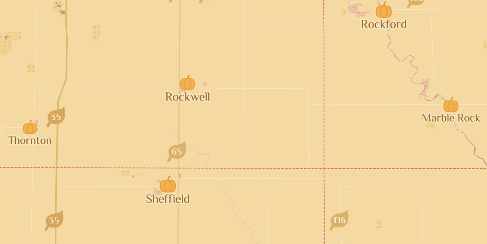
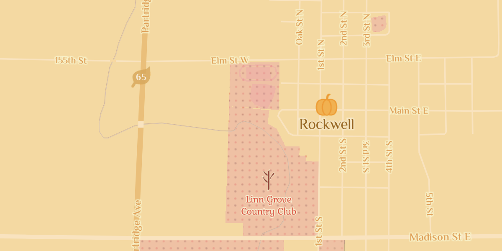

Pumpkin Patch
My style is called Pumpkin Patch and is based on the Fall season.
In the map, pumpkins represent cities, and leaves highways.

The map "decays" as you zoom in.






But this style didn't always look like this.
When I first created this style, it was all in black and white.
Play around the full map.
Credits:
Map created with Mapbox Studio
Data from openstreetmap